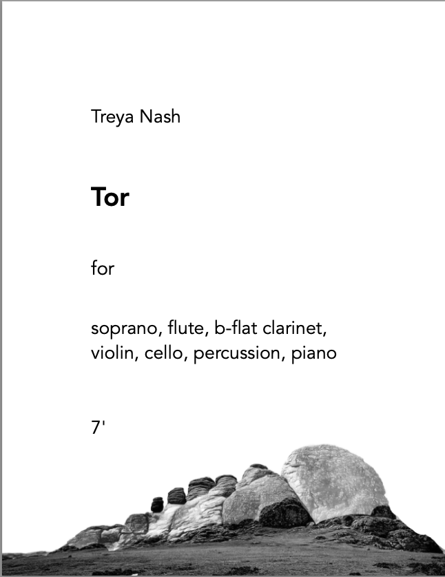

Tor exists in several pierrot+ configurations. The piece explores the many indefinite shades of pitch in a semitone, in an examination of timbre, texture, and microrhythms created by beating. I named the piece “Tor” after the free-standing rock formations, stunning examples of which can be found on Dartmoor, a beautiful moor in my home county, Devon. I’m not one for mysticism, but the arcane energy of that place feels undeniable to me.
Click for Score
